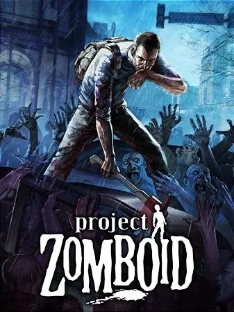

Project Zomboid
O melhor RPG de sobrevivência zumbi com visão isométrica. Sobreviva o máximo de tempo possível num apocalipse — gerenciando fome, sede, sono, humor, ferimentos e infecção enquanto saqueia casas, constrói bases e enfrenta hordas cada vez maiores.
ver detalhes →O melhor RPG de sobrevivência zumbi com visão isométrica. Ambientado no condado fictício de Knox, no Kentucky, o objetivo é simples e cruel: sobreviver o máximo de tempo possível num apocalipse. Você gerencia fome, sede, sono, humor, ferimentos e o risco de infecção enquanto saqueia casas, constrói bases, planta comida e foge (ou enfrenta) hordas cada vez maiores.
Famoso pela frase "é assim que você morreu" — porque aqui a morte é permanente e inevitável; a graça é descobrir quanto tempo você aguenta. A profundidade é absurda: carpintaria, mecânica de veículos, eletricidade, agricultura, e até o seu estado emocional afeta a sobrevivência. Em desenvolvimento contínuo pela The Indie Stone desde 2013 — e o meu favorito.
- estúdioThe Indie Stone
- lançamento2013 (acesso antecipado)
- gênerosobrevivência · zumbis · isométrico